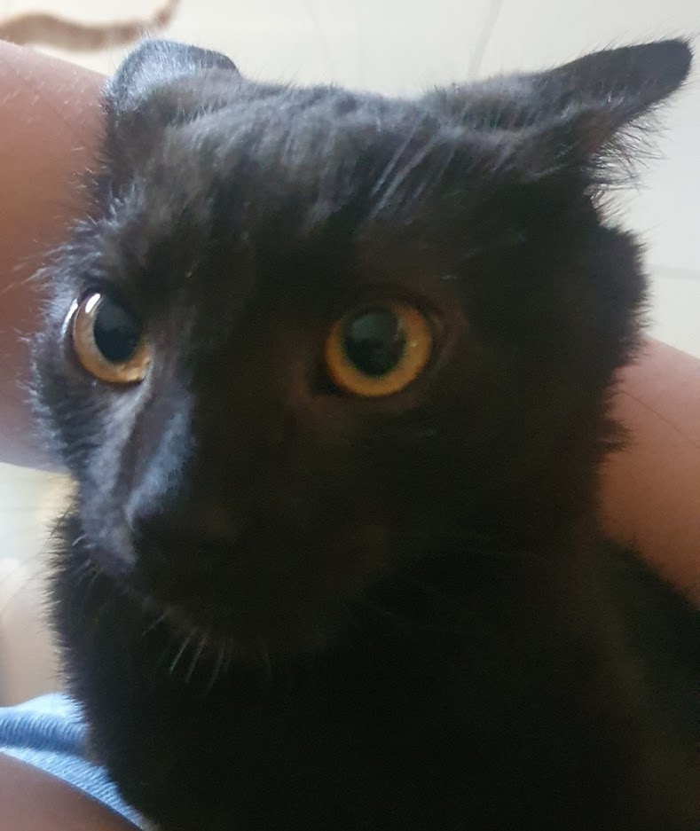
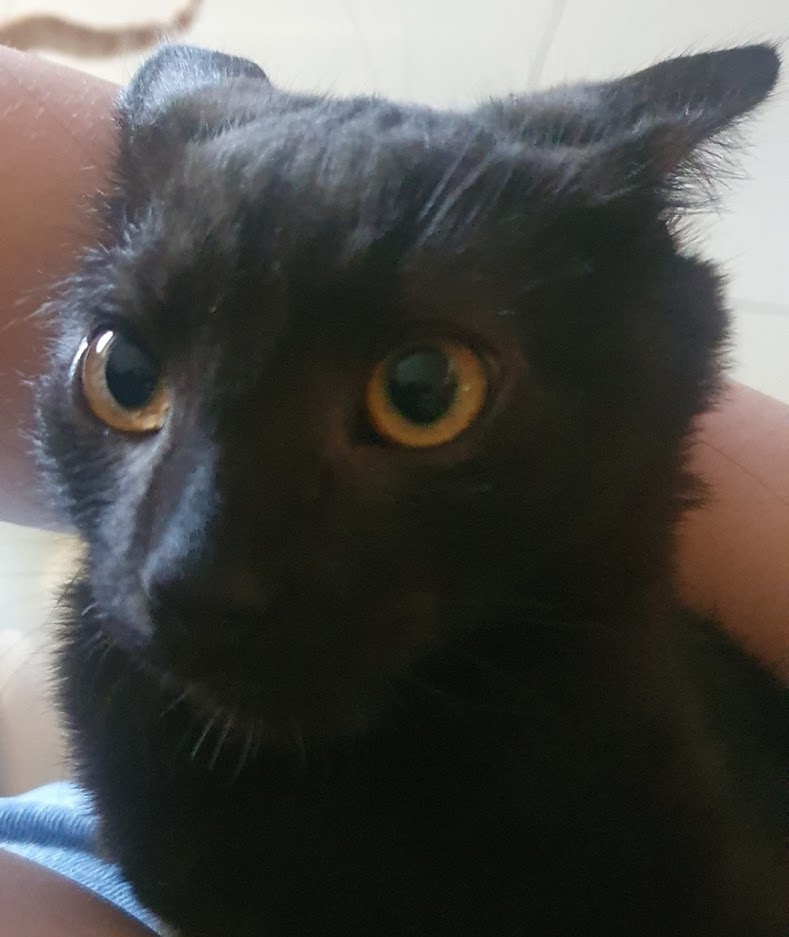

Eu tenho 2 gatinhos o Nigiri e o Shoyu, eu ganhei eles ano passado, em novembro/dezembro, mês que vem o Nigiri faz 1 ano e em outubro o Shoyu.
Nigiri
O Nigiri é rapidinho, adora miar para os passarinhos da rua, a gente pode virar ele de cabeça pra baixo que ele não mia nada, um dia quando o Nigiri tinha menos de 5 meses ele caiu do meu apartamento e começou a miar muuuuito, ficou todo mundo procurando ele e depois a gente viu que ele tava na rua, só que até hoje ninguém sabe da onde que ele caiu, mas nem se machucou, n tinha um aranhão e ele caiu em tipo um "jardim".

Shoyu
O Shoyu quando a gente corre atrás dele ele n foje pq ele fica com medo e se encolhe, ele ama ratinhos de brinquedo e se tu chegar perto ele rosna e morde, ele não gosta que peguem no colo masss ele quer carinho 24h se tu levanta a mão ele acha que é carinho e vem se esfregar, ele chora muuuito e fica miando por tudo, principalmente por comida, ele é muito peludo e adora subir no aquário, ele também já caiu e niguém sabe como, mas ninguém tava em casa e foi na calçada mesmo, meu pai chegou do trabalho as 12 e ele tava na frente da garagem, deu tudo certo também.
 
